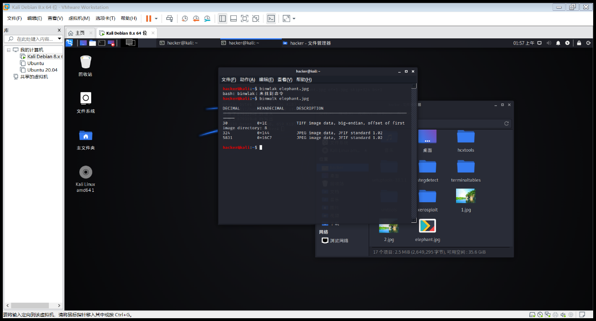

渗透测试实验一
# 1. 用搜索引擎 Google 或百度搜索麻省理工学院网站中文件名包含 “network security” 的 pdf 文档，截图搜索得到的页面
# 2. 照片中的女生在哪里旅行？截图搜索到的地址信息。
根据图片上的信息可以确定咖啡馆的名称，通过 google 地图可以查到地址为 38 Avenue de Suffren, 75015 Paris
虽然店铺装潢已经变了，但是还是可以通过图片中的披萨店和 2 楼窗台确定的
# 3、手机位置定位。通过 L
# AC（Location Area Code，位置区域码）和 CID（Cell Identity，基站编号，是个 16 位的数据（范围是 0 到 65535）可以查询手机接入的基站的位置，从而初步确定手机用户的位置。
获取自己手机的 LAC 和 CID：
Android 获取方法：Android： 拨号 *##4636##* 进入手机信息工程模式后查看
iphone 获取方法：iPhone：拨号 * 3001#12345#* 进入 FieldTest
Serving Cell info–>LAC=Tracking Area Code -->cellid = Cell identity
若不能获取，用右图信息。
截图你查询到的位置信息。
实验应用原理通过 LAC 反查可以获取到位置信息
# 4、编码解码
# 将 Z29vZCBnb29kIHN0dWR5IQ== 解码。截图。
# 5、地址信息
# 5.1 内网中捕获到一个以太帧，源 MAC 地址为：98-CA-33-02-27-B5；目的 IP 地址为：202.193.64.34，回答问题：该用户使用的什么品牌的设备，访问的是什么网站？并附截图。
# 5.2 访问 https://whatismyipaddress.com 得到 MyIP 信息，利用 ipconfig (Windows) 或 ifconfig (Linux) 查看本机 IP 地址，两者值相同吗？如果不相同的话，说明原因。
不同，因为我们获取到的是公网地址，而ipconfig获取的是内网（相对于公网ip下）因为用了NAT地址转换技术
# 6、NMAP 使用
# 6.1 利用 NMAP 扫描 Metasploitable2（需下载虚拟机镜像）的端口开放情况。并附截图。说明其中四个端口的提供的服务，查阅资料，简要说明该服务的功能。
# 6.2 利用 NMAP 扫描 Metasploitable2 的操作系统类型，并附截图。
nmap 基本步骤
nmap -sP 192.168.0.0/24 扫描存活
nmap 192.168.xxx.xxx 发现存活主机后扫描端口
namp -O 192.168.xxx.xxx 查看操作系统
# 6.3 利用 NMAP 穷举 Metasploitable2 上 dvwa 的登录账号和密码。
访问 ip 发现 80 有 http 服务发现了 dvwa 的登录界面
然后使用 nmap 自带的爆破脚本进行弱口令爆破
nmap -p80 --script=http-form-brute --script-args=http-form-brute.path=/dvwa/login.php 192.168.37.189
Over！拿到登录账号和密码
# 6.4 查阅资料，永恒之蓝 - WannaCry 蠕虫利用漏洞的相关信息。
# 7、利用 ZoomEye 搜索一个西门子公司工控设备，并描述其可能存在的安全问题
搜索 simens 发现有很多工控设备开启了 ssh 服务和 telnet 服务，若无管理则有被爆破的风险。
# 8、Winhex 简单数据恢复与取证
# 8.1 elephant.jpg 不能打开了，利用 WinHex 修复，说明修复过程。
常见文件头汇总
jpg 的 hex 头尾 FFD8 修复一下就好

修复后文件：

用 binwalk 二进制分析可以看到有两张图片（错乱）

虽然两张图片一样大但是清晰度和大小比例均不如原图，可能是 ps 做出来的文件里面用的源文件吧.......😂
# 8.2 笑脸背后的阴霾：图片 smile 有什么隐藏信息。
Tom is the killer.. 🔪